This project is conducted by Juan Diego Herrera and Seungho (Samuel) Lee. Here, we expand upon Robert Culkin’s and Sanjiv R. Das’ effort to recreate the Black-Scholes option pricing model using neural networks.
The Black Scholes model is used to price put and call options by estimating the variation over time said financial instruments. The model is based on the assumption that the markets are highly efficient (i.e., Efficient Market Hypothesis), which suggests that stock prices are uncorrelated to one another across time. As a result, Geometric Brownian Motion (GBM) also has been assumed. However, the assumption isoften violated in practice, leading to numerous variations of the Black-Scholes model.
The Black-Scholes formula for European call and put options are:
\[C(S_0,t)=S_0N(d_1)-Ke^{-r(T-t)}N(d_2)\] \[P(S_0,t)=Ke^{-r(T-t)}N(-d_2)-S_0N(-d_1)\] where
- \(S_0\): Stock Price
- \(C(S_0,t)\): Price of the Call Option
- \(K\): Exercise Price
- \((T-t)\): Time to Maturity, where T is Exercise Date
- \(\sigma\): Underlying Volatility (a standard deviation of log returns)
- \(r\): Risk-free Interest Rate (i.e., T-bill Rate)
The \(d_i\) variables are defined as: \[d_1=\frac{\ln\frac{S_0}{K}+(r+\frac{\sigma^2}{2})(T-t)}{\sigma\sqrt{T-t}}\] \[d_2=d_1-\sigma\sqrt{T-t}=\frac{\ln\frac{S_0}{K}+(r-\frac{\sigma^2}{2})(T-t)}{\sigma\sqrt{T-t}}\]
Finally, \(N(x)\) is cumulative distribution function for the standard normal distribution.
In this project, we aim to do the following:
1. Recreate Culkin and Das’ work
2. See whether fitted simulated model performs well on actual data
3. Observe if the model can perform better based on different datasets
To recreate Culkin and Das’ work we utilized the same simulated data used in the paper to train and validate the neural network.
Aditionally, we queried UKX options data and the options’ underlying stock infromation from Bloomberg (see Bloomberg Query File). We also created another dataset by scraping information for S&P500 companies from Yahoo Finance and AlphaQuery.
To train a neural network to learn the call option pricing equation, Culkin and Das (2017) simulated a range of call option prices with ranges of different parameters:
| Parameter | Range |
|---|---|
| Stock Price \((S)\) | $10 — $50 |
| Strike Price \((K)\) | $7 — $650 |
| Maturity \((T-t)\) | 1 day to 3 years |
| Dividend Rate \((q)\) | 0% — 3% |
| Risk Free Rate \((r)\) | 1% — 3% |
| Volatility \((\sigma)\) | 5% — 90% |
| Call Price \((C)\) | $0 — $328 |
In total, the dataset contains 300,000 observations.
This data is consisted of call options for stocks in the UKX 100 from Bloomberg Terminal. As Bloomberg Terminal has an upper bound for queries, this data only consists of 1600+ observations.
To address a limited number of observations on the above data, we collected additional data through web scraping. Although web data may be imperfect, it can still hold useful information. For this dataset there are 57,000+ observations and we evaluate it separately from the addendum of UKX data.
We used following dependencies and scikit-learn’s prebuilt models to train and visualize our results:
import numpy as np
from sklearn.neural_network import MLPRegressor
from sklearn.model_selection import train_test_split
from sklearn.metrics import mean_squared_error, r2_score
import pandas as pd
import matplotlib.pyplot as plt
import pickle
from scipy import stats
import matplotlib
matplotlib.rcParams['figure.dpi'] = 300| Index | Stock Price | Strike Price | Maturity | Dividends | Volatility | Risk-free | Call Price |
|---|---|---|---|---|---|---|---|
| 0 | 206.484 | 194.386 | 1.093 | 0.006 | 0.863 | 0.059 | 79.434 |
| 1 | 79.582 | 73.926 | 0.844 | 0.020 | 0.760 | 0.081 | 24.976 |
| 2 | 130.957 | 154.101 | 1.326 | 0.019 | 0.606 | 0.042 | 28.928 |
| 3 | 53.021 | 58.598 | 0.792 | 0.028 | 0.573 | 0.037 | 8.574 |
| 4 | 455.191 | 529.570 | 0.501 | 0.009 | 0.091 | 0.044 | 0.210 |
The original dataset contains an unnecessary index column, so we dropped it from the data frame.
As we know that the Black-Scholes formula is linear homogeneous in \(C(S,K)\), we can normalize our data as: \(C(S,K)/K=C(S/K,1)\)
Hence, the results are shown below:
| Index | Stock Price | Strike Price | Maturity | Dividends | Volatility | Risk-free | Call Price |
|---|---|---|---|---|---|---|---|
| 0 | 1.062 | 1.0 | 1.093 | 0.006 | 0.863 | 0.059 | 0.409 |
| 1 | 1.077 | 1.0 | 0.844 | 0.020 | 0.760 | 0.081 | 0.338 |
| 2 | 0.850 | 1.0 | 1.326 | 0.019 | 0.606 | 0.042 | 0.188 |
| 3 | 0.905 | 1.0 | 0.792 | 0.028 | 0.573 | 0.037 | 0.146 |
| 4 | 0.860 | 1.0 | 0.501 | 0.009 | 0.091 | 0.044 | 0.000 |
To remain as faithful to Culkin and Das, we trained the neural network with the following parameters:
- 4 hidden fully connected layers, each with 100 neurons
- Batch size of 64
- 10 training epochs
- 80-20 train-validation split
- Mean Squared error as loss function
The main difference between our model and the paper’s model is that our network uses ReLU as the activation function for every layer, instead of using LeakyReLU, ELU, ReLU, and ELU for the four layers respectively. We also did not employ dropout regularization. Lastly, we opted to use “Adam” as our optimizer rather than stochastic gradient descent.
np.random.seed(32)
X_train, X_test, y_train, y_test = train_test_split(df.drop('Call Price', axis=1),
df['Call Price'], test_size=0.2)
mlp = MLPRegressor(hidden_layer_sizes=(100,100,100,100),
solver='adam', shuffle = False, batch_size=64, verbose=True,
max_iter= 10
) We started by exploring the most basic performance metric for every regression problem: \(R^2\)
print("Training set score: %f" % mlp.score(X_train, y_train))
print("Test set score: %f" % mlp.score(X_test, y_test))We received \(R^2\) values (training and test) of 0.999476 and 0.999474.
We can see that the model produced very promising results from the simulated data. While the results show that the algorithm is able to learn option pricing mechanism, we cannot draw any significant conclusion that it can produce meaningful results in real life situation.
We can visualize the succes of the model in the graph below:
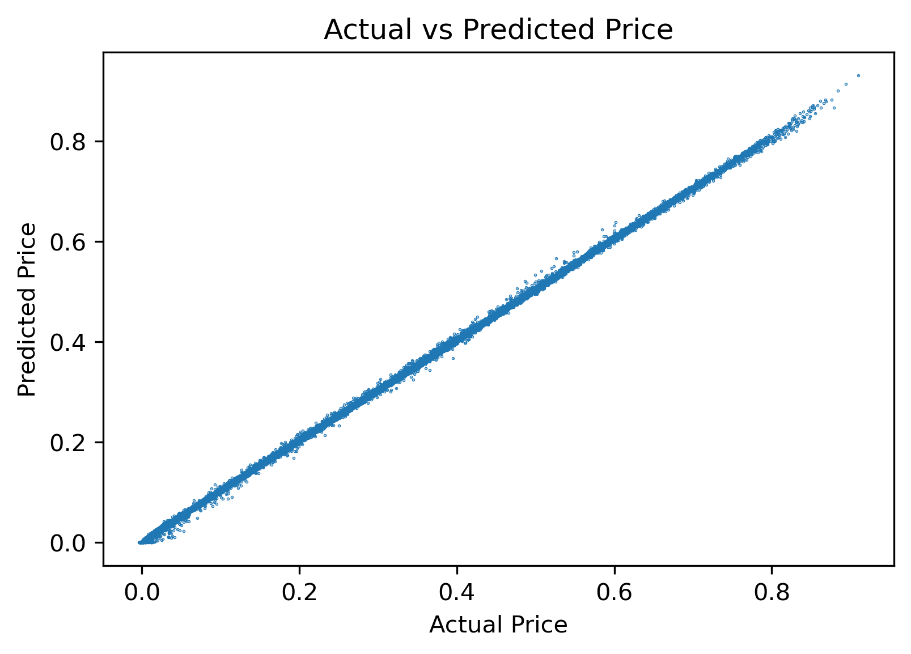
We can also explore the distribution of both the in-sample and out of sample error:
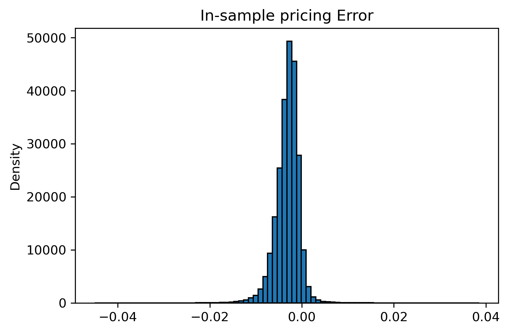
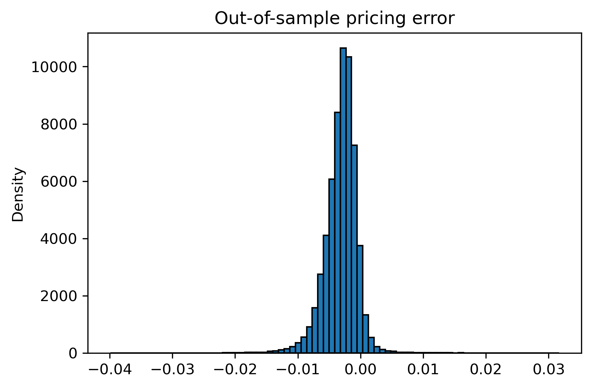
rmse = mean_squared_error(preds_test, y_test)**0.5; rmse # root mean squared error
print("RMSE: %.4f" % rmse)Root Mean Square Error of the prediction is 0.0041. Hence, the pricing error in the training set can be summarized as below:
| Number of Observations | minmax | mean | variance | skewness | kurtosis |
|---|---|---|---|---|---|
| 240,000 | (-0.045, 0.039) | -0.003 | 0.000007 | -0.400 | 12.084 |
The pricing error in the test set can be summarized as below:
| Number of Observations | minmax | mean | variance | skewness | kurtosis |
|---|---|---|---|---|---|
| 11,841 | (-1.407,204.185) | 0.091 | 10.957 | 54.036 | 3,074.578 |
So far, we have observed the behavior of the model using the synthetic data. Though the use of synthetic data has allowed us to learn the Black-Scholes model quite accurately, we have yet to see how the model performs using real data. Plus, we could also gauge whether models trained in real data are able to better price options in the market.
Nonetheless, it is worth noting that a common option trading strategy is to determine whether an option is undervalued or fairly valued with respect to the market’s price and the price outputed by Black-Scholes. With this in mind, if our model misprices an option with a higher price, it could be an indicator that said option is undervalued.
Important: by the time the data for this article was collected, the current risk-free rate was 0.88%.
To start the validation, we pulled options data using a Bloomberg terminal. To limit the size of query, we extracted the data for around ~1600 calls on stocks in the UKX100.
| Stock Price | Strike Price | Maturity | Dividends | Volatility | Risk-free | Call Price | |
|---|---|---|---|---|---|---|---|
| 0 | 4,732.0 | 1.0 | 0.09 | 0.000000 | 0.392 | 0.0088 | 4,731.0 |
| 1 | 4,732.0 | 1.0 | 0.34 | 11.949099 | 0.392 | 0.0088 | 4,731.0 |
| 2 | 4,732.0 | 1.0 | 0.02 | 0.000000 | 0.392 | 0.0088 | 4,731.0 |
| 3 | 2,094.0 | 1.0 | 0.09 | 0.000000 | 0.530 | 0.0088 | 2,093.0 |
| 4 | 2,094.0 | 1.0 | 0.34 | 4.424667 | 0.530 | 0.0088 | 2,093.0 |
Though it might seem that this data is normalized already, such is not the case. Therfore, we normalize the data by dividing by the strike.
We proceeded with dropping Call Price column on the data and predicted to see how the model performs.
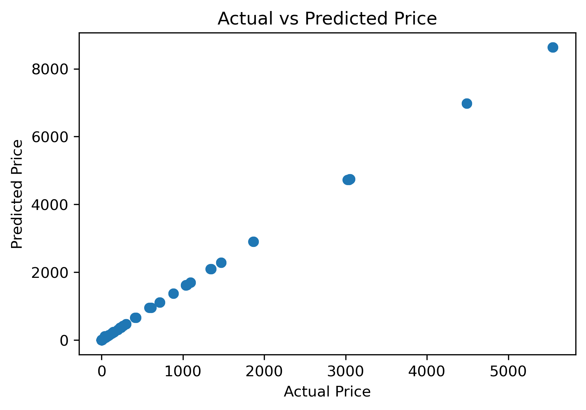
From a quick glance, there seems to be some minor deviations. In fact, we got \(R^2\) value of 0.8699. We can also see the distribution of the errors. Since the simulated data were not generated under a normal distribution, it would not be surprising to observe a skewed distribution:
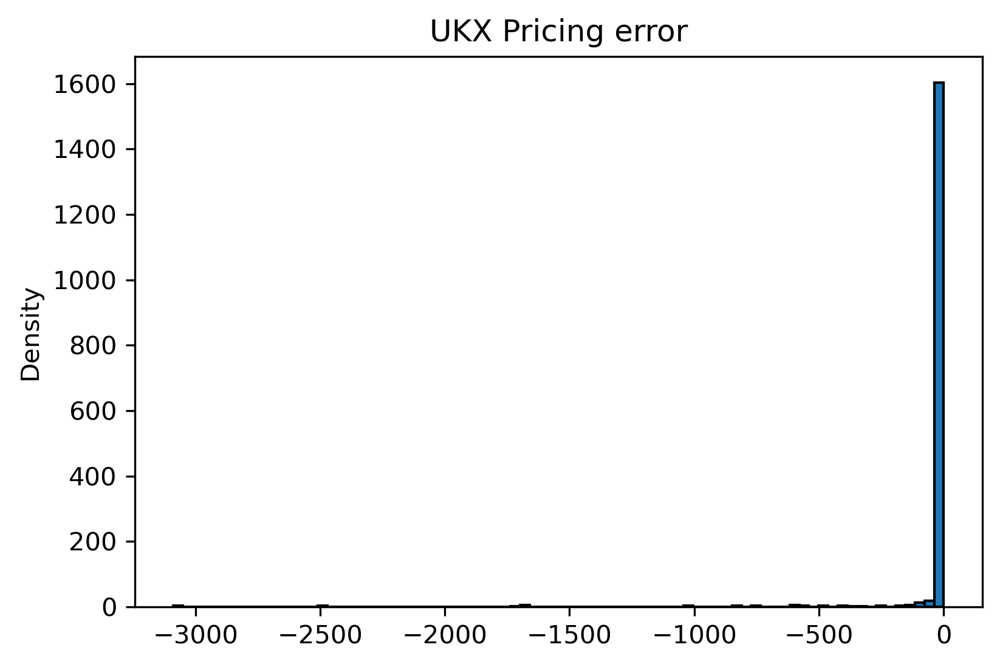
While the model performed worse relative to previous sample, it still achieved a high R-squared value considering that the training data and the test data came from different sources. Hence, the above graph is summarized as below:
| Number of Observations | minmax | mean | variance | skewness | kurtosis |
|---|---|---|---|---|---|
| 1,685 | (-3,088.616,0.352) | -28.828 | 44,608.131 | -10.457 | 123.588 |
It makes sense that a model trained from the simulated data would perform relatively bad. However, a real question is whether neural network can perform well given real data that is not normally distributed.
To mitigate the effect of having less data, we increased the number of epochs:
np.random.seed(32)
X_train_ukx, X_test_ukx, y_train_ukx, y_test_ukx = train_test_split(ukx.drop('Call Price', axis=1),
ukx['Call Price'], test_size=0.2)
mlp_u = MLPRegressor(hidden_layer_sizes=(100,100,100,100),
solver='adam', shuffle = False, batch_size=64, verbose=True,
max_iter= 20
)
mlp_u.fit(X_train_ukx, y_train_ukx)Hence, the model achieved \(R^2\) values of 0.999998 and 0.999998 for training and testing sets.
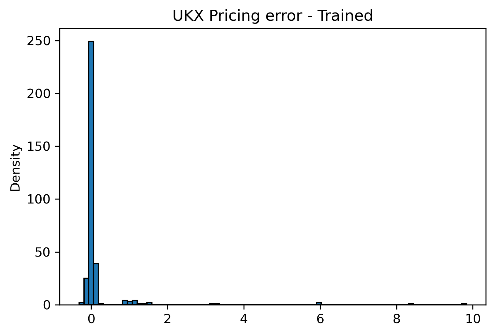
| Number of Observations | minmax | mean | variance | skewness | kurtosis |
|---|---|---|---|---|---|
| 337 | (-0.316,9.836) | 0.164 | 0.804 | 7.901 | 69.226 |
From the above, we can see that the model was able to perform very well, given that there were only 1,685 observations used for training the model. However, one thing to note is that the result exhibits a very high kurtosis: while the model is consistent in most cases, it could lead to a severe gain/loss (long tails) from time to time. In real-life application, such model will not be preferred by the practitioners as the expected values of risk associated with investment strategies utilizing the model above will be hard to capture via traditional financial models, such as Value-at-Risk (VaR).
To finalize the exploration on the performance of this model, we will see how the model behaves when put it against data scraped from S&P500 options.
To gather the data and generate the dataset, we created this scraping algorithm. We made a dataset of ~57,000 entries.
Taking a same approach as the above, we began with a normalization process of the data:
| Stock Price | Strike Price | Maturity | Dividends | Volatility | Risk-free | Call Price | |
|---|---|---|---|---|---|---|---|
| 0 | 21.990000 | 1.0 | 0.005616 | 0.0275 | 0.3434 | 0.0088 | 22.600000 |
| 1 | 4.398000 | 1.0 | 0.005616 | 0.0275 | 0.3434 | 0.0088 | 2.420000 |
| 2 | 3.141429 | 1.0 | 0.005616 | 0.0275 | 0.3434 | 0.0088 | 1.571429 |
| 3 | 2.443333 | 1.0 | 0.005616 | 0.0275 | 0.3434 | 0.0088 | 1.233333 |
| 4 | 2.199000 | 1.0 | 0.005616 | 0.0275 | 0.3434 | 0.0088 | 1.260000 |
After the normalization, we proceeded with predicting Call Price from the S&P data, using an original model:
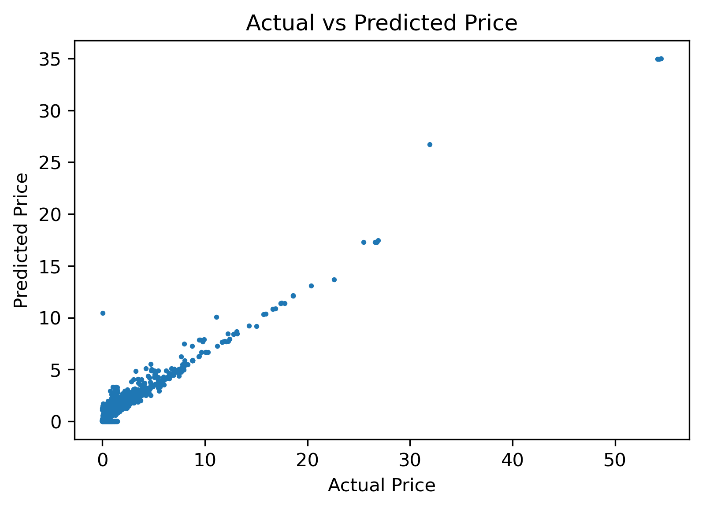
From the above, we can see that there seems to be more deviations than predictions made on previous data. To assess a relationship between the In-The-Money (ITM) call options and the Out-of-The-Money (OTM) call options, we plotted a new graph that is focused on a bottom-left cluster. In usual cases, OTM call options would have higher prices than the predicted points:
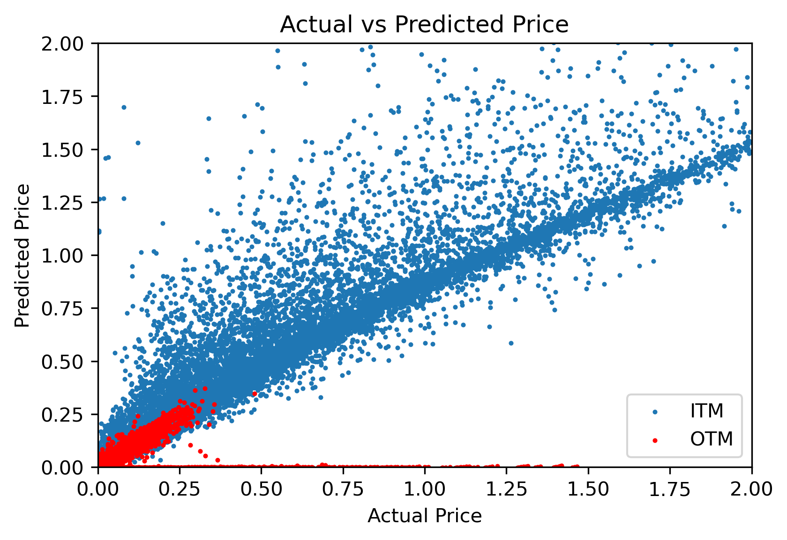
The above graph exhibits what we have discussed in the above. Furthermore, while a variation is relatively higher, the model seems to find some success. In fact, we can see that the \(R^2\) value is 0.8818.
The results are outstandingly similar to the UKX. This is indicative that the model might be missing feature data to increase accuracy. Regardless, an \(R^2\) of 88% is still impressive as it is hard to capture a high \(R^2\) value using real data and traditional financial economic models.
Lastly, we observed a distribution of the pricing errors:
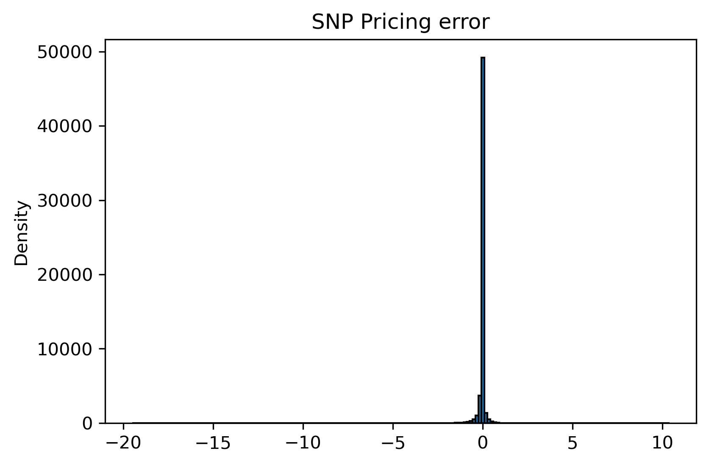
| Number of Observations | minmax | mean | variance | skewness | kurtosis |
|---|---|---|---|---|---|
| 57,516 | (-19.509,10.407) | -0.031 | 0.080 | -29.561 | 1,739.708 |
Due to a presence of extreme values on both tails, the distribution shows high skewness and kurtosis. However, it also exhibits considerably low variance, suggesting that the model predicted fairly accurately, except for some extreme cases.
In this section, we checked whether a model trained on real data performs significantly better than a model trained on the synthetic data. For this analysis we concatenated the UKX and SNP data into a larger dataset.
To compensate for a lack of data, we trained the model longer by increasing the number of epochs.
np.random.seed(32)
df2 = pd.concat([ukx, snp])
X_train2, X_test2, y_train2, y_test2 = train_test_split(df2.drop('Call Price', axis=1),
df2['Call Price'], test_size=0.2)
mlp2 = MLPRegressor(hidden_layer_sizes=(100,100,100,100),
solver='adam', shuffle = False, batch_size=64, verbose=False,
max_iter= 20
)
mlp2.fit(X_train2, y_train2)Hence, the model achieved \(R^2\) values of 0.999435 and 0.999439 for training and testing sets. Surprisingly, we observed from the above that there was an insignificant difference in a performance between the two models. Furthermore, we analyzed the pricing error of the real data model:
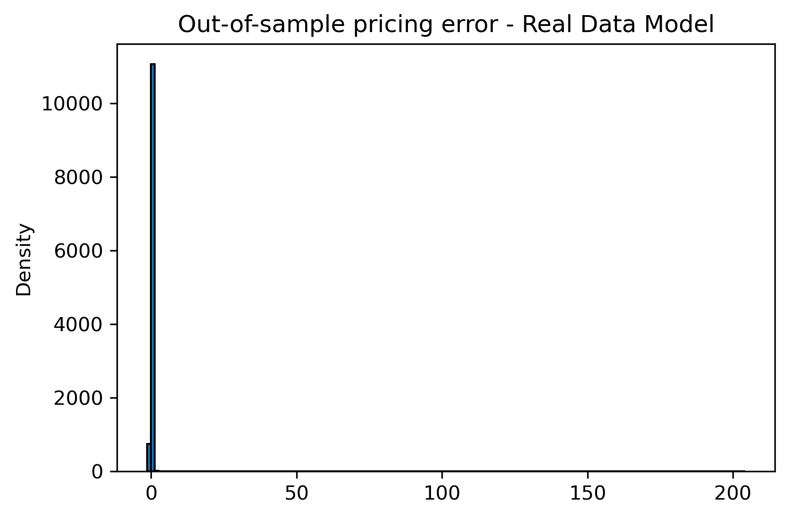
| Number of Observations | minmax | mean | variance | skewness | kurtosis |
|---|---|---|---|---|---|
| 11,841 | (-1.407,204.185) | 0.091 | 10.957 | 54.036 | 3,074.578 |
We observed a similar distribution as before, even if a few outliers are cropped out. Finally, for an icing on the cake, we applied the final model on the simulation data.
As the model achieved the \(R^2\) value of 0.8296, we observed that the model performed slightly weaker, a similar result that we had seen from the above predictions.
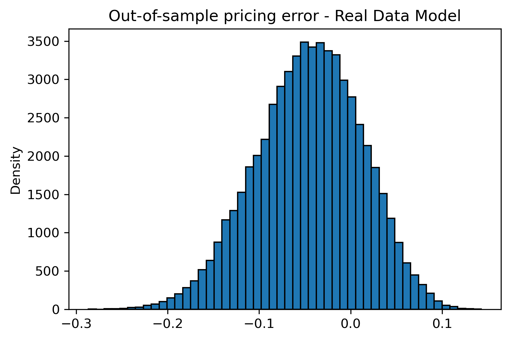
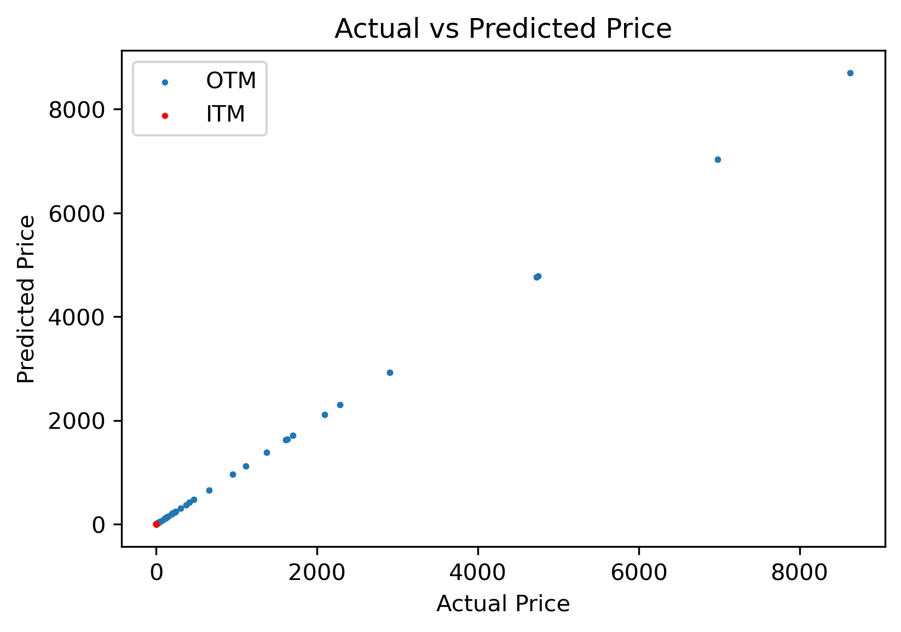
Interestingly, we see a quite similar behavior to the model trained on synthetic (yet less noisy) data. Since we are only looking at portion of the SNP and UKX data, something worth exploring would be to scrape all of the SNP data and test the model again.
Regardless, we’ve shown that real options data follows somewhat closely the guidelines established by Black-Scholes, and that in this case, training on real data is better than training on synthetic data.
In this research project, we validated Culkin and Das conclusion: a machine learning field is facing a rebirth that has found applications in highly dynamic fields such as finance. Certain financial pricing schemes could be non-linear (e.g., Black-Scholes) and undergo a significant amount of calculation to reach a conclusion. However, neural networks can learn and predict non-linear behavior fairly accurately, which can be seen from a relatively high \(R^2\) values of the above models.
However, we also saw that the fitted models produced drastically different test accuracies, depending on a seed level, and that the error distributions of those models exhibited high skewedness and kurtosis. Therefore, more consistent models could be generated through optimizing hyperparameters and conducting a comprehensive data transformation process. It is also important to note that the above models failed to fit all options with different maturities and strikes.
In theory, it is well regarded that it is nearly impossible to predict stock prices in consistent manner as the actual market is highly efficient (i.e., Efficient Market Hypothesis). Plus, a high level of noise exists in real data. Therefore, creating a model that predicts stock prices in a very consistent manner would be extremely difficult to create, yet would yield inmense monetary benefits.